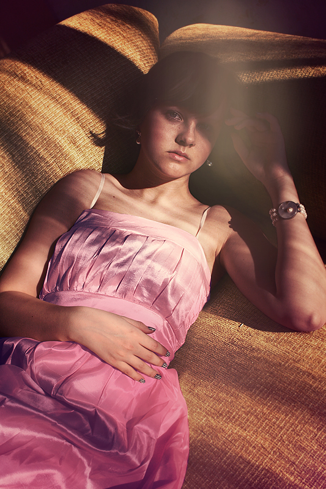

MonoJS v1.0.1
Monolize images with two colors via canvas element.
by Kadir 'Akkara' Yardımcı, 2013

Original image by MausClea
$("#blackandwhite img").mono({color:"#ffffff"})
$("#gradientmap img").mono({color:"#fd7c00",black:"#4c0e4a"})
$("#lighten img").mono({color:"#ffffff",black:"#ff0000"})